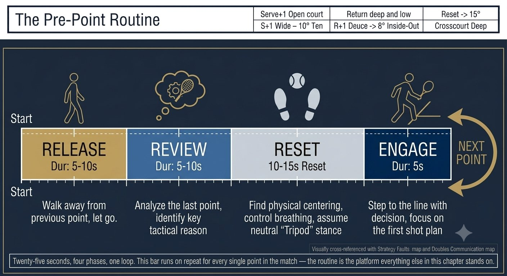
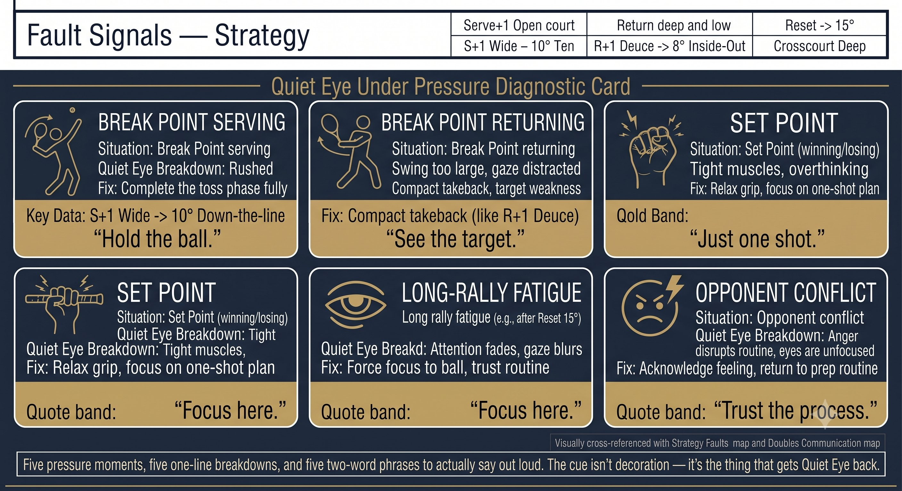

Chapter 28: Mental
(English version of Chapter 28 in the United Tennis Handbook)
CHAPTER 28

Figure 1
MENTAL
Pre-Point Routine, Quiet Eye, Pressure
The mind isn't separate from the body. Quiet Eye is mental training. Routine is physical preparation.
The Pre-Point Routine: 30 to 40 Seconds
Routine isn't superstition. It's a nervous-system reset. It carries you from the last point to this one.
— Henry Pham
Between points you have 25 seconds. Use all of it. The routine runs in four phases:
Figure 28.1: Four phases, thirty to forty seconds, every single point. Release clears the past. Review sharpens the next. Reset rebuilds the body. Engage fires the CORE.

Figure 2
RULE: Routine is not optional. It is the bridge from Q-V-ROOT-8-45-Impulse-Jin theory to execution. No routine means no platform.
Quiet Eye Under Pressure
Pressure doesn't break your strokes. Pressure breaks Quiet Eye. Eyes flick to the target, the head lifts, the face opens, the ball goes long.
— Henry Pham
Research (Vickers, Wilson) shows that under pressure, Quiet Eye duration drops 30 to 50%. Onset delays. Offset comes early.
Figure 28.2: Five pressure moments, five Quiet Eye breaks, five fixes. The cue column is the only thing you say to yourself — and it's always the physical action, never the outcome.

Figure 3
Coach's Tip
Pressure is a Quiet Eye test. If you can hold Quiet Eye at 5-5, 30-40, you win. If your eyes flick, you lose. Train it: say "park" out loud in practice. Whisper it in matches.
Visualization: Five Minutes a Day
– This isn't "imagining winning." Visualization is neural rehearsal of Q-V-ROOT-8-45-Impulse-Jin.
– See: the ball leaving the opponent's strings, your split step, your eyes parking at the bounce, your head still, a small 8, the brake, the pulse, the ball hitting the target.
– Feel: the foot screwing in, the oblique stretch, the palm push, the one-inch pulse, the sound of a heavy ball.
– Do: five minutes daily, first person, real time. Include pressure moments — break point, set point.
– Science: visualization activates the same motor cortex as physical practice. It strengthens myelin on the Q-V-ROOT pathways.
Pressure Scenarios: the Four Big Ones
Figure 28.3: Four match-defining situations. Each row pairs the mental reframe with the physical action — they only work together. The mental fix without the physical fix is just wishing.
RULE: Pressure doesn't exist in the ball. It exists in your interpretation. Change the interpretation and you change the physiology, and you change Quiet Eye.
Self-Talk: the Three Modes
Figure 28.4: Three modes, three moments, one rule: the brain doesn't hear 'don't.' Say what you want to happen, not what you're afraid of.
PRINCIPLE: No negative self-talk, ever. "Don't miss" — the brain hears "miss." Say "hit the target" instead.
Between-Point Recovery: the 15-Second Reset
1. Exhale fully (a parasympathetic trigger).
2. Walk to the towel or fence (physical separation).
3. One technical note, maximum: "Contact front." Not "Don't be late."
4. Feet tripod. Chin tucked. Hands 3/10.
5. Two slow breaths. "Where am I? What ball? What face?"
6. Step to the line. Engage.
Mental Checklist
ROUTINE: RELEASE. REVIEW. RESET. ENGAGE. QUIET EYE: PARK. HOLD. RELEASE. PRESSURE: BREATHE. ROUTINE. EXECUTE.
– Pre-point routine: four phases, 30 to 40 seconds, the same every point.
– Release: exhale, walk, clear the last point.
– Review: one adjustment only, no rumination.
– Reset: feet tripod, chin tucked, hands 3/10, two breaths, the CORE questions.
– Engage: step up, eyes on target, "park, push" or "saber."
– Quiet Eye: park at the bounce, hold through contact, release after.
– Pressure: the routine stays the same. Verbal cue "park, push." Breathing slows.
– Visualization: five minutes a day, first person, real time, including pressure.
– Self-talk: instructional, motivational, regulatory — never negative.
Where This Leads
This chapter covers the mental game: the pre-point routine, Quiet Eye, and pressure. Chapter 29 covers the physical game: tennis-specific fitness and periodization. Chapter 30 is the unified Q-V-ROOT-8-45-Impulse quick reference card.